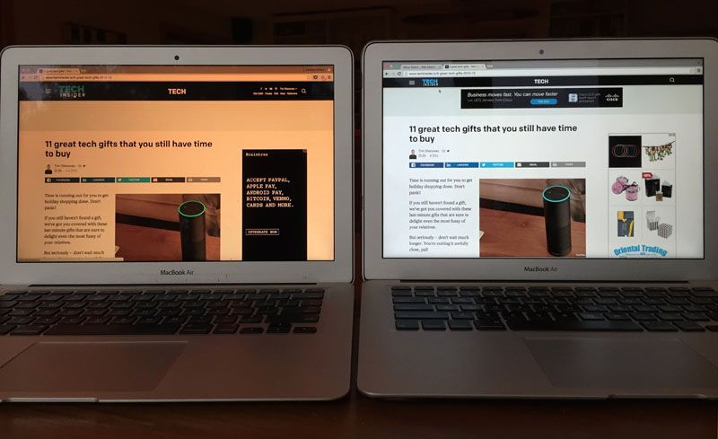
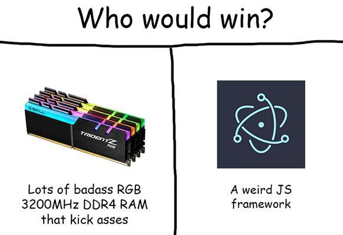
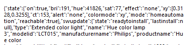
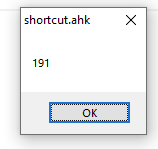

Réglage de luminosité d'écrans Dell & Philips Hue via AHK
Dans mon setup "docké" j'utilise le clavier Logitech MX Keys sur lequel se trouve 2 boutons permettant de diminuer ou augmenter la luminosité des écrans.
Avant j'utilisais f.lux donc je ne m’étais jamais penché dessus. Mais avec le temps je dois avouer que lorsqu'on travail sur des photos, logos ou autre, la teinte donnée à l'écran par flux peut devenir très dérangeante.

J'avais donc mon échappatoire, pouvoir diminuer la luminosité de mes écrans pour préserver mes yeux tout en gardant une palette de couleurs correcte.
Utilisant déjà AHK pour mes raccourcis claviers, pourquoi ne pas chercher à y ajouter cette fonctionnalité ?
A noter que je n'aime pas avoir des 10ene de fichiers différents pour une même tache donc il faudra tout faire rentrer dans le script tournant en arrière plan, sans devoir appeler de .bat .vbs et autres joyeusetés.
Le bureau étant éclairé avec une Philips Hue, pourquoi ne pas en profiter pour la mêler à notre projet ? Une télécommande de moins dans les parages !
Gestion de la luminosité des écrans
Qui dit pas de raccourcis natifs dit pas de diming natif, nous devons donc trouver comment récupérer cette fonctionnalité autrement.
Programmes indépendants
J'ai commencé par regarder ce qui se faisait ailleurs, pas mal de programmes sont dispo mais ils ont presque tous la fâcheuse tendance à être fait de la même manière : Un soft en JS appliquant un calque noir au dessus de l'écran dont l'opacité varie pour plus ou moins l'assombrir.

J'ai tout de même testé. Résultat : après 5 minutes ma souris est passé au dessus du calque noir, puis des menus, puis des nouvelles fenêtres, puis crash...
Dell Display Manager
La bonne nouvelle ! En recherchant coté fabricants, j'ai pu découvrir que mes écrans étaient compatibles avec le logiciel Dell Display Manager, qui permet de modifier les réglages "hardware" (accessibles par les boutons physiques sur l'écran) mais via l'interface du logiciel, donc nous avons une réelle gestion matérielle de la luminosité !
2eme bonne nouvelle : il y a le CLI qui va avec, il est donc possible de scripter les changements sans passer par l'interface graphique, parfait pour notre objectif !
Aujourd’hui car je ne vais utiliser que ses fonctions de modification de luminosité, mais il est capable de plus de chose, plus d'infos sur le site de Dell.
Bug de luminosité
Je ne sais pas si le bug vient de DDM ou du firmware de mes écrans mais le résultat est là : Si la luminosité de l'écran est fixée au minimum (0%) alors il n'est plus possible de l’incrémenter, il doit être re-set avec un pourcentage fixe.
Je veux une utilisation fluide, ne pas avoir à debug ou tweak chaque jour la même chose. Aller refixer à la main la luminosité après avoir trop spam n'est donc dans l'envisageable.
Malheureusement je n'ai pas trouvé de façon simple de récupéré le pourcentage de luminosité actuel de l'écran. Cela doit être possible en analysant les calls de DDM donc c'est envisageable pour plus tard mais c'est à exclure de notre POC.
Néanmoins en fouillant les clefs de registre je suis tombé sur celle-ci: HKEY_CURRENT_USER\SOFTWARE\EnTech\DDM\LastRC
Que contient-elle ? La réponse au dernier ordre envoyé par DDM, qui est donc toujours le même lorsque l'on rencontre notre bug !
Ce n'est pas parfait mais on peut s'en servir, le bug arrivant lorsque notre luminosité descend à 0% ou moins, nous n'avons qu'à mettre en place un check de cette clef après chaque baisse de luminosité et le cas échant re-set la luminosité à une valeur supérieure à 0 :
LWin & F1::
Run, %comspec% /c ""C:\Program Files (x86)\Dell\Dell Display Manager\ddm.exe" "/1:DecControl 10 A /2:DecControl 10 A"", , Hide
RegRead, errorcheck, HKEY_CURRENT_USER\SOFTWARE\EnTech\DDM, LastRC
if errorcheck = 2:DecControl 10 A = Error
{
Run, %comspec% /c ""C:\Program Files (x86)\Dell\Dell Display Manager\ddm.exe" "/SetBrightnessLevel 1"", , Hide
MsgBox, Minimal Brightness
}
Return
Voilà comment se déroule le bloc :
Lors de l'input touche windows gauche & F1 on demande à DDM de baisser la luminosité de 10%, puis on check le registre pour voir si nous sommes en erreur (et donc à <= 0). Si c'est le cas on set la luminosité à 1% puis on l'indique dans un pop-up afin de ne pas spammer inutilement le raccourci.
Update: Le workaround RegRead ne fonctionne pas à 100% et une grand partie des erreurs ne sont pas vues, j'ai finalement réécris moi-même une fonction de gestion de l'incrémentation :
- On définit une variable DellBri fixé à 70 (pour 70%) au démarrage
- A chaque augmentation ou diminution, on vient faire -10 ou +10 puis on passe la commande qui force-set un niveau de luminosité, avec la variable comme argument.
Voilà ce que ça donne :
DellBri := 70
LWin & F1::
DellBri -= 10
if DellBri <= 0
{
DellBri = 0
Run, %comspec% /c ""C:\Program Files (x86)\Dell\Dell Display Manager\ddm.exe" "/SetBrightnessLevel 0"", , Hide
}
else {
Run, %comspec% /c ""C:\Program Files (x86)\Dell\Dell Display Manager\ddm.exe" "/SetBrightnessLevel %DellBri%"", , Hide
}
Return
J'ai ajouté la condition <= 0 ainsi si l'utilisateur spam le bouton pour diminuer la luminosité il ne doit pas spammer autant de fois l'augmentation pour augmenter d'un cran.
Bonus: Lorsque l'on utilisait la fonction de palier native les écrans avait un delais de quelque chose comme 0.25s, ils ne changeaient pas de luminosité en même temps. Alors qu'avec le SetBrightnessLevel ils sont synchronisés !
Gestion de la luminosité de la pièce
Philips Hue & API
TLDR: Les lampes Philips Hue disposent d'une API, limitée comparée à leurs possibilités globales mais répondant à 100% à mon besoin. De plus leur documentation est très intuitive donc je ne vais pas les paraphraser, elle est disponible ici.
Le debugger permet de jouer et tester à la main pas mal de choses, voici donc les fonctionnalités qui m’intéressent:
- Allumer/Éteindre l'ampoule
Method = "PUT"
URL = "$ip_bridge/api/$userID/lights/$lampID/state"
Body = {"on":true/false}
- Changer la luminosité
Method = "PUT"
URL = "$ip_bridge/api/$userID/lights/$lampID/state"
Body = {"bri":1-255}
Maintenant il faut faire rentrer ça dans AHK !
Nous allons donc utiliser un objet WinHttpRequest, plus d'informations sur la doc officielle de Microsoft.
Voici donc à quoi ressemble une requête pour allumer une ampoule :
LWin & F4::
TurnOn := ComObjCreate("WinHttp.WinHttpRequest.5.1")
TurnOn.Open("PUT", "http://$bridgeIP/api/$userID/lights/$lampID/state", 0)
body = {"on":true}
TurnOn.Send(body)
Return
De même, pour changer la luminosité, il faut passer la valeur voulue au parametre bri comme vu plus haut, à noter que nous pouvons en faire passer plusieurs à la fois. Pour, par exemple, allumer l'ampoule et la set à 255/255 en une seule requete :body = {"on":true, "bri":255}
Récupérer des valeurs
Contrairement aux écrans nous ne pouvons pas incrémenter l'intensité des ampoules nativement, nous allons donc avoir besoin de la valeur à un instant T de bri afin de créer nous même l’incrémentation.
Grace à l'API nous pouvons récolter tout un tas d'infos sur les valeurs actuelles concernant notre ampoule, voici un aperçu :

Ce qui nous intéresse ici c'est donc la valeur de bri, une fois les infos récupérées dans AHK nous pouvons extraire la valeur grâce à une fonction créée sur mesure (on évite au passage de devoir sortir unRegExp) :
LWin & F4::
GetBri := ComObjCreate("WinHttp.WinHttpRequest.5.1")
GetBri.Open("GET", "http://10.0.0.15/api/wABz--1bvJ5mkwjc3yRjLTjzUMtz8qD5BvL1LLho/lights/3/", 0)
GetBri.Send()
FullResponse := GetBri.ResponseText
start = bri":
end = ,"hue"
ActualBri := StringBetween( FullResponse, start, end )
StringBetween( String, NeedleStart, NeedleEnd="" ) {
StringGetPos, pos, String, % NeedleStart
If ( ErrorLevel )
Return ""
StringTrimLeft, String, String, pos + StrLen( NeedleStart )
If ( NeedleEnd = "" )
Return String
StringGetPos, pos, String, % NeedleEnd
If ( ErrorLevel )
Return ""
StringLeft, String, String, pos
Return String
}
MsgBox, % ActualBri
Return
Grace à cette fonction nous pouvons choisir 2 chaines de caractères entourant les valeurs que nous souhaitons récupérer, merci les forums AHK !

Bonus : Amplitude horaire
Selon l’éclairage / les reflets nous pouvons vouloir augmenter ou diminuer la luminosité de nos écrans sans pour autant avoir besoin que la lumière soit allumée.
Pour cela nous pouvons mettre une condition horaire sur l'interaction avec les lampes :
FormatTime, TimeString, hh, Time Permet de recuperer l'heure au format hh:mmActualTime := SubStr(TimeString, 1, 2) Afin de ne garder que les 2 premiers chiffresIl ne reste qu'à mettre l'amplitude horaire comme condition à nos requetes :
if ActualTime between 8 and 17
{
requete
}
Pas plus compliqué que ça !
Maintenant que nous savons récupérer et set des valeurs on peut partir sur la dernière ligne droite, agencer tout ça !
Combinaison des différents éléments
Il faut qu'à l'allumage de l'ordinateur les valeurs de base de l’écran et des ampoules soient constantes et en harmonie. Ainsi pas de déséquilibre entre l'intensité de la lumière et celle des écrans.
Pour cela nous allons donc set une valeur fixe qui sera appliquée à chaque démarrage du script (et donc de l'ordinateur). Je vais partir sur la base de 70% d'intensité :
Run, %comspec% /c ""C:\Program Files (x86)\Dell\Dell Display Manager\ddm.exe" "/SetBrightnessLevel 70"", , Hide
DellBri := 70
FormatTime, TimeString, hh, Time
ActualTime := SubStr(TimeString, 1, 2)
if ActualTime between 8 and 15
{
LampOn := "false"
}
else
{
LampOn := "true"
}
Boot := ComObjCreate("WinHttp.WinHttpRequest.5.1")
Boot.Open("PUT", "http://$bridgeIP/api/$userID/lights/$lampID/state", 0)
body = {"on":%LampOn%, "bri":178}
Boot.Send(body)
Il faudra jongler entre les valeurs Dell et les valeurs Hue, le 1er étant exprimé en pourcentage, le deuxième en nombre binaire à huit chiffres. Ces derniers ne pouvant comporter de virgule on va arrondir (ici 70% de 255 = 178.5, on utilise 178)
On définit selon l'heure la variable d’état de l'ampoule, ainsi, même si elle est éteinte, la luminosité correspondante qui reviendra lorsque l'heure sera la bonne sera toujours en corrélation avec celle de l'écran !
Ensuite on déclare la fonction permettant de chercher dans les retours d'API :
StringBetween( String, NeedleStart, NeedleEnd="" ) {
StringGetPos, pos, String, % NeedleStart
If ( ErrorLevel )
Return ""
StringTrimLeft, String, String, pos + StrLen( NeedleStart )
If ( NeedleEnd = "" )
Return String
StringGetPos, pos, String, % NeedleEnd
If ( ErrorLevel )
Return ""
StringLeft, String, String, pos
Return String
}
Passons au premier bind, celui pour diminuer l'intensité :
LWin & F1::
DellBri -= 10
FormatTime, TimeString, hh, Time
ActualTime := SubStr(TimeString, 1, 2)
if ActualTime between 8 and 15
{
LampOn := "false"
}
else
{
LampOn := "true"
}
if DellBri <= 0
{
DellBri = 0
Run, %comspec% /c ""C:\Program Files (x86)\Dell\Dell Display Manager\ddm.exe" "/SetBrightnessLevel 0"", , Hide
SendBri := ComObjCreate("WinHttp.WinHttpRequest.5.1")
SendBri.Open("PUT", "http://$briddeIP/api/$userID/lights/$lampID/state", 0)
body = {"on":%LampOn%, "bri":0}
SendBri.Send(body)
}
else
{
Run, %comspec% /c ""C:\Program Files (x86)\Dell\Dell Display Manager\ddm.exe" "/SetBrightnessLevel %DellBri%"", , Hide
GetBri := ComObjCreate("WinHttp.WinHttpRequest.5.1")
GetBri.Open("GET", "http://$briddeIP/api/$userID/lights/$lampID/", 0)
GetBri.Send()
FullResponse := GetBri.ResponseText
start = bri":
end = ,"hue"
ActualBri := StringBetween( FullResponse, start, end )
NewBri := ActualBri - 25
SendBri := ComObjCreate("WinHttp.WinHttpRequest.5.1")
SendBri.Open("PUT", "http://$briddeIP/api/$userID/lights/$lampID/state", 0)
body = {"on":%LampOn%, "bri":%NewBri%}
SendBri.Send(body)
}
Return
Comme vu précédemment nous faisons attention à la possibilité que l'utilisateur spam la touche, nous définissions donc les valeurs minimales et maximales pour éviter de devoir re-spammer dans l'autre sens.
J'ai pris comme palier le choix arbitraire de 10%, (soit environs 25 pour notre octet) car je n'ai pas envie de passer un temps interminable pour aller d'un extrême à l'autre.
Pour l'augmentation :
LWin & F2::
DellBri += 10
FormatTime, TimeString, hh, Time
ActualTime := SubStr(TimeString, 1, 2)
if ActualTime between 8 and 15
{
LampOn := "false"
}
else
{
LampOn := "true"
}
if DellBri >= 100
{
DellBri = 100
Run, %comspec% /c ""C:\Program Files (x86)\Dell\Dell Display Manager\ddm.exe" "/SetBrightnessLevel 100"", , Hide
SendBri := ComObjCreate("WinHttp.WinHttpRequest.5.1")
SendBri.Open("PUT", "http://$bridgeIP/api/$userID/lights/$lampID/state", 0)
body = {"on":%LampOn%, "bri":255}
SendBri.Send(body)
}
else
{
Run, %comspec% /c ""C:\Program Files (x86)\Dell\Dell Display Manager\ddm.exe" "/SetBrightnessLevel %DellBri%"", , Hide
GetBri := ComObjCreate("WinHttp.WinHttpRequest.5.1")
GetBri.Open("GET", "http://$bridgeIP/api/$userID/lights/$lampID/", 0)
GetBri.Send()
FullResponse := GetBri.ResponseText
start = bri":
end = ,"hue"
ActualBri := StringBetween( FullResponse, start, end )
NewBri := ActualBri + 25
SendBri := ComObjCreate("WinHttp.WinHttpRequest.5.1")
SendBri.Open("PUT", "http://$bridgeIP/api/$userID/lights/$lampID/state", 0)
body = {"on":%LampOn%, "bri":%NewBri%}
SendBri.Send(body)
}
Return
Nous retrouvons la même chose, mais cette fois si avec 100 & 255 comme valeurs maximales.
Avant de se quitter, une démo vidéo :
Le fichier final est disponible sur mon github, n’hésitez pas à proposer vos améliorations !